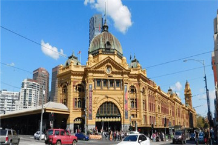
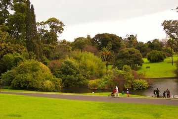
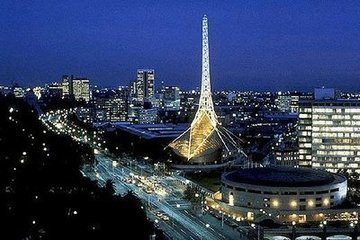
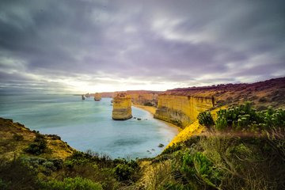
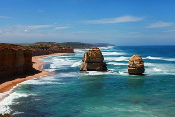

morly旅游圈
墨尔本是澳洲文化、工业中心，南半球最负胜名的文化名城，以纪念英国首相威廉·兰姆--第二代墨尔本子爵而命名，1847年由英国维多利亚女王宣告墨尔本市(City of Melbourne)成立。墨尔本曾是澳大利亚联邦 维多利亚州的首府，城市绿地率高达40%。大墨尔本地区面积达到3,400平方英里(8806平方公里)，是南半球较广大的都会区之一。墨尔本城市环境非常优雅，曾荣获联合国人居奖，并连续多年被联合国人居署评为"全球最适合人类居住的城市" 。
大洋路: 大洋路位于墨尔本西部，是为纪念参加第一次世界大战的士兵修建的，参与建设的人也包括许多参战老兵，共有3000余工人为此付出了艰辛的汗水。这条路于1919年开始动工，1932年全线贯通。 大洋路起点自托尔坎（Torquay），终点于亚伦斯福特（Allansford），全长近300公里的海滨公路。路边的海岸风光是全球最佳的景点之一。这里有宁静的海湾、冲浪海滩、热带雨林、山洞和风口，也有举世知名的景点——奇特的天然石柱“十二使徒岩”（已有一根倒塌）屹立于海洋里，总长250 公里，这路线上还可以观看到历史性的海底沉没船只和多种野生动物。
墨尔本唐人街 : 在墨尔本CBD区域，位于东西中轴线的Elizabeth大街和南北中轴线的Bourke大街更是有着一段爱情故事，两条街的交汇点就是整个城市的最中心。而墨尔本唐人街就离这里就300米，非常具有中国市井气息，许多中餐馆可以感受异乡中国食物的滋味。也有许多绵羊油、羊毛产品、化妆品售卖。另外，旁边不远还有Target Center等几个商超可以购物，买到澳洲本土的羊毛靴、雪地靴等羊毛制品。
墨尔本皇家植物园: ·建于1845年，是当今世界上设计最好的植物园之一，种植着来自澳大利亚甚至世界各地的奇花异草。 ·体验活动丰富多彩，有儿童花园、植物标本馆、植物园商店等，儿童花园里面有许多互动的设施，帮助孩子大自然零距离接触。 ·值得一提的是，园内还有很多名人亲手种植的纪念树，如英国侦探小说家柯南道尔，阿尔伯特亲王以及泰国国王等社会名流。 ·有专门提供以植物为主题的纪念品和礼品的店铺，一家是位于天文台附近的Observatory Shop，另一家是Lakeside Shop，买来作伴手礼非常有趣。
维多利亚州立图书馆: 维多利亚州立图书馆（State Library of Victoria）是世界上最大的图书馆之一，是州内顶级的参考和研究图书馆，是了解世界信息的门户。图书馆陈列的许多物品展示了维多利亚的文化生活、历史和现状，这些物品通过一系列服务、展览和文化活动面向社区开放。 维多利亚州立图书馆成立于1854年，它的成立归功于许多杰出的墨尔本市民的努力，如雷蒙德·巴里阁下（Sir Redmond Barry）和副州长查尔斯·约瑟夫·拉筹伯（Lieutenant-Governor Charles Joseph La Trobe），最初图书馆的愿景十分宏大——要包括“全方位的一流体验”，并成为“一个集学习、哲学、文学、科学和艺术于一体的大型综合体”。
福林德斯火车站: 弗林德斯街火车站是澳大利亚最早的火车站，也是墨尔本当地火车线路的总站。已成为墨尔本的著名标志，经常出现在旅游刊物的封面。 车站主入口的上方是一排显示世界各地时间的钟，建筑的圆形拱顶酷似伦敦圣保罗大教堂。 站台站牌非常有历史底蕴。车站下面的坎贝尔拱廊经常举办各色展览，值得一逛。 在火车站的百米之内，有咖啡馆、美术馆、电影院，沿途古树参天成荫，是个休闲的好地方。
内容整理至网络，如有侵权，请联系我们！1255394075@qq.com
    